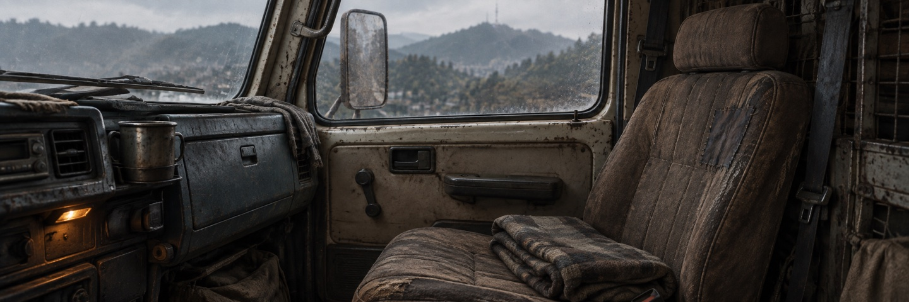

달구지 안
닫기
아직은 혼자
타는 길
길에서 만난 사람의 이야기를 듣고, 함께 갈지 정한다.
달구지 안
닫기공책 · 사이드 미션
덮기울산까지 태워주고,
함께 꺼내기로 했다.
민지 오빠가 남긴 진단기. 목소리가 남아 있을지도 모른다고 했다.
울산 공단 쪽 폐차장으로 간다.
야영 · 민지와 잠깐
지금은 쉬기점검 덮개 옆

점검 덮개 아래서 소리가 나서 민지를 불렀다. 민지는 공구함부터 끌어당겼다.
민지공구 좀… 아. 고쳐 달라는 건 아니었죠?
함께 듣기15분
야영 · 민지와 잠깐
15분 경과민지가 덮개에 귀를 가까이 댄다. 공구함을 잡았던 손은 무릎에 놓는다.
민지급한 소리는 아니에요. 이 정도면… 얘 꽤 오래 가겠는데요.
덮개를 닫고도 둘은 잠깐 그대로 앉아 있었다.
달구지 안
닫기공책 · 사이드 미션
덮기울산까지 태워주고,
함께 꺼내기로 했다.
민지 오빠가 남긴 진단기. 목소리가 남아 있을지도 모른다고 했다.
울산 공단 쪽 폐차장으로 간다.
동료 화면을 닫습니다.
게임에서는 열기 전 화면으로 돌아갑니다. 현재처럼 사건 결과가 열려 있다면 그 결과를 유지하고, 임의로 주행하거나 다음 대사를 넘기지 않습니다.
여기는 동작 설명입니다. 실제 저장이나 열린 창을 변경하지 않았습니다.
혼자일 때 화면 다시 보기열기 전 화면으로.
동료 화면을 닫아도 민지는 울산까지 함께 타는 손님으로 남습니다. 초안의 닫기는 실제 게임의 동행이나 저장을 바꾸지 않습니다.
손님 화면 다시 보기다시 야영으로.
이 예시에서는 대화에 15분을 쓴 뒤의 상태로 돌아갑니다. 대화를 재지급하거나, 민지를 정식 동료로 바꾸거나, 곧바로 출발하지 않습니다.
실제 게임 시간은 흐르지 않았습니다.
대화 뒤 차 안 다시 보기